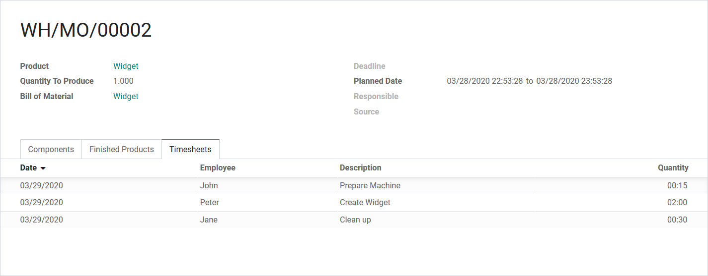
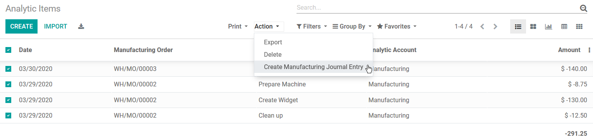
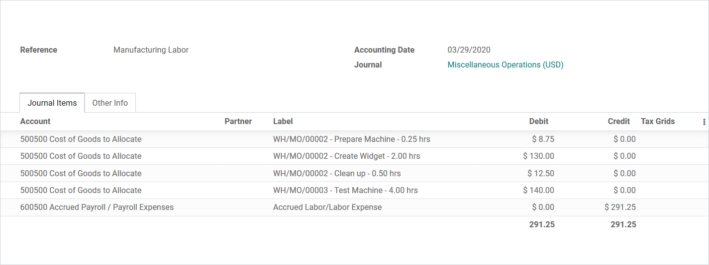

Track Manufacturing Labor Costs
Calculate total Labor per product, per order, and record it in the General Ledger
All Tasks - from prep to finish
Different rates per Employee. Log setup time before you start. No Work Centers needed.

Convert Analytic Entries
Periodically post the additional costs to the General Ledger

Editable Journal Entry
Preview the impact and adjust the accounts, if needed
